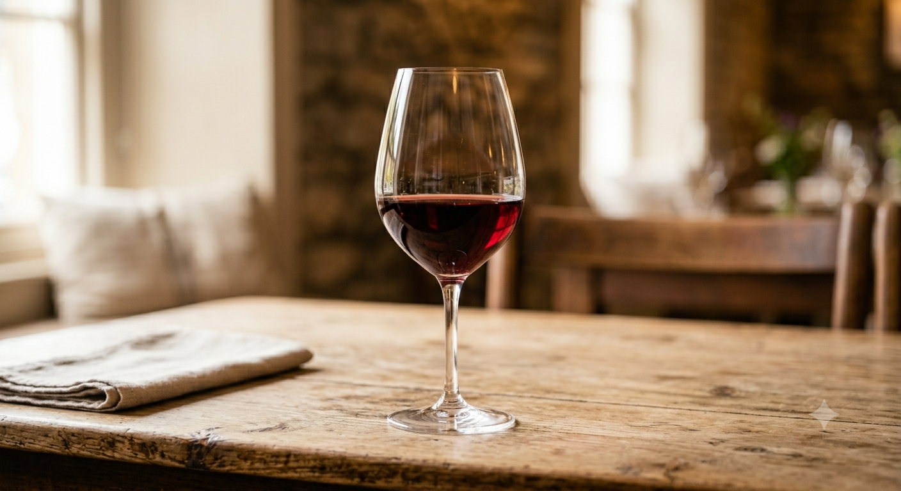
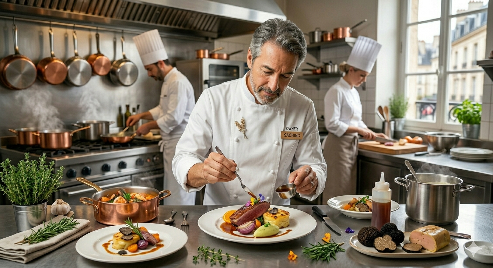

米沢牛が、
時の流れに
溶け込んでゆく。
創業一九八二、欧風レストラン 西洋葡萄
Scroll
創業一九八二、欧風レストラン 西洋葡萄
Scroll
一九八二年の創業以来、守り続けているのは「ごまかしのない味」。
東京銀座で学んだ伝統のドミグラスソースに、
地元山形の芳醇な赤ワインと、厳選された米沢牛を合わせる。
じっくりと火を通し、休ませ、また火を入れる。
その繰り返しだけが、雑味のない「極み」を生み出します。


Chef. 料理人人生五十五年
一九四九年、山形県南陽市に生まれました。若き日に東京「タカセ」「東京會舘」の厨房で浴びた熱気。フランス料理の王道を歩み、ソースの一滴まで妥協しない精神を刻み込みました。
「故郷の素晴らしい食材に、確かな技術を掛け合わせたい」
一九八二年に西洋葡萄を開いて四十三年。私は今も、サラダ一皿、スープ一杯に当時の感動を込めています。それは、お客様の「美味しい」という言葉が、私の唯一の報酬だからです。
43年の伝統と技を、店舗の壁を越えて。より多くのお客様へ届けるための「新サービス」をただいま準備しております。
ワインマルシェやクラシックカーイベント、野外フェスなどへ出店予定。青空の下で味わう特選米沢牛ビーフシチューや極上デミグラスバーガーなど、イベント限定メニューをお届けします。
ご自宅での記念日や特別なご会食へ、シェフ自らが赴く出張レストランサービス。店舗の料理と雰囲気気をそのまま特別な空間でお愉しみいただけます。
【イベント主催者様・企業様へ】
野外イベントへの出店依頼やコラボレーション企画に関するお問い合わせは、お電話（0238-40-3581）にて承っております。
本ページをご覧になり、ご予約を頂いたお客様へ。
食後のひとときをより豊かに彩る
「自家製ジンジャーエール」または「珈琲」を
無料でお愉しみいただけます。
※ご予約時、または入店時にスタッフへ本画面をご提示ください。